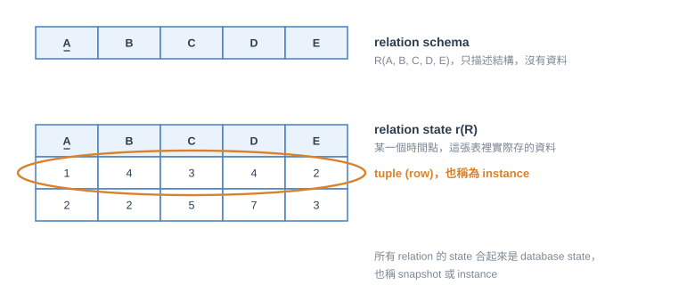
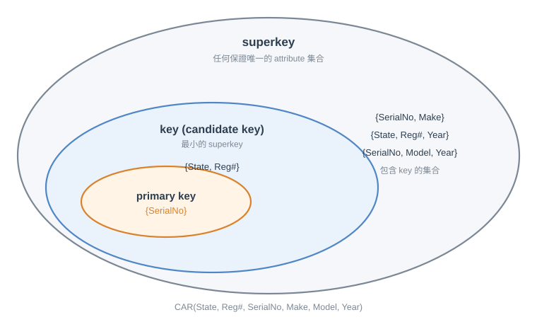
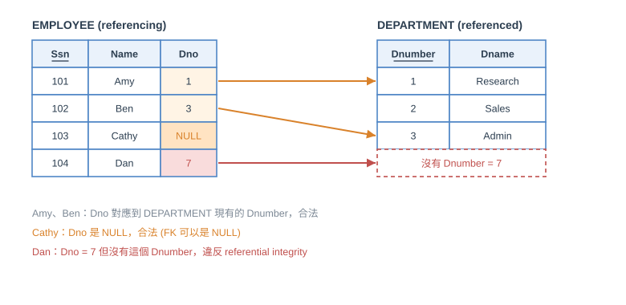
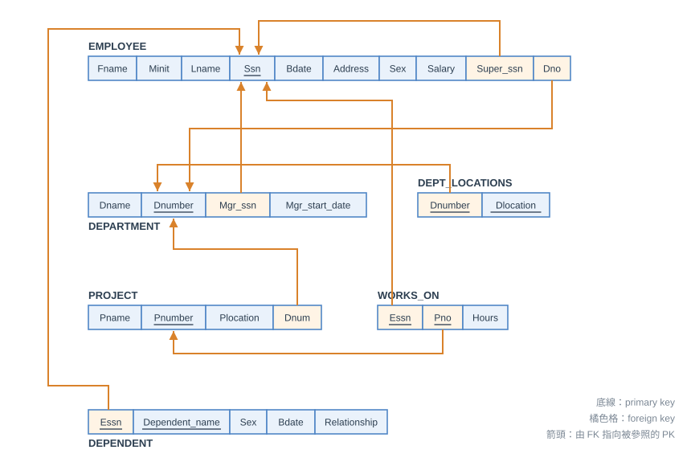
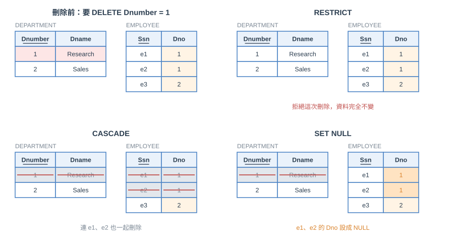

第一節 Relational Model 的基本概念
一個 relation 在直覺上就是一張值的表格。每一列代表一個現實世界的 entity 或 relationship 的事實，每一欄有欄位名稱說明這個欄位的意義。正式的名詞和日常說法的對照：
| 日常說法 | Formal 名詞 |
|---|---|
| table | relation |
| column header | attribute |
| row | tuple |
| 欄位所有可能的值 | domain |
| table definition | schema of a relation |
| populated table (有資料的表) | state of the relation |
Schema、Domain、Tuple、State
- relation schema $R(A_1, A_2, \dots, A_n)$：$R$ 是 relation 的名字，$A_1, \dots, A_n$ 是它的 attribute。例如
CUSTOMER(Cust-id, Cust-name, Address, Phone#) - domain：attribute 可以取的合法值的集合。它有邏輯上的定義 (例如 USA_phone_numbers 是美國的 10 碼電話)，也有 data type 或格式 (例如
(ddd)ddd-dddd)。attribute 的名稱決定了這個 domain 在 relation 中扮演的 role，例如 Date 這個 domain 可以同時給Invoice-date與Payment-date兩個意義不同的 attribute 使用 - tuple：一組有順序的值 $\langle v_1, v_2, \dots, v_n \rangle$，每個 $v_i$ 必須來自對應 attribute 的 domain。一個 relation schema 有 $n$ 個 attribute，它的 tuple 就是 $n$-tuple
- relation state $r(R)$：某個時間點 relation 裡實際存的 tuple 的集合，是 domain 的 Cartesian product 的子集合
$$r(R) \subseteq \text{dom}(A_1) \times \text{dom}(A_2) \times \dots \times \text{dom}(A_n)$$
舉例：$R(A_1, A_2)$，$\text{dom}(A_1) = \{0, 1\}$、$\text{dom}(A_2) = \{a, b, c\}$。所有可能的組合有 $\{\langle 0,a \rangle, \langle 0,b \rangle, \langle 0,c \rangle, \langle 1,a \rangle, \langle 1,b \rangle, \langle 1,c \rangle\}$，而 $r(R) = \{\langle 0,a \rangle, \langle 0,b \rangle, \langle 1,c \rangle\}$ 只是其中一個合法的 state

<註> 上圖三個名詞要分清楚：
- relation schema：只有結構，沒有資料，上圖上方的表頭
- relation state：結構加上某個時間點實際存的資料，資料改變 state 就變成另一個 state
- tuple：state 裡的一列
database 層級也有同樣的對應：資料庫所有 relation 的 state 合起來是 database state，也稱 database snapshot 或 database instance。其中 instance 最容易搞混：它可以指整個 database 的 state，也可以指單一個 tuple (一列資料也能稱為 instance)。講義因此避免使用 instance 這個詞，看到時要依上下文判斷它指的是整個 database 還是一個 tuple
Relation 的特性
- tuple 之間沒有順序：relation 是 tuple 的集合，tuple 之間可以隨意交換位置，表格看起來有先後只是顯示的結果，state 不會改變
- tuple 內的值有順序：在 $R(A_1, \dots, A_n)$ 與 $t = \langle v_1, \dots, v_n \rangle$ 中，第 $i$ 個值對應第 $i$ 個 attribute，不能交換位置。(另一種比較一般的定義是每個值都連同 attribute 名稱一起存，例如 $t = \{\langle \text{name}, \text{"John"} \rangle, \langle \text{SSN}, 123456789 \rangle\}$，這樣就不需要順序，稱為 self-describing)
- 每個值都是 atomic (不可再分)：一個格子裡只能放一個不可分割的值，不能再放一張 table 或一個 list，multi-valued 與 composite attribute 不能直接當成欄位
- NULL：特殊的值，用來表示未知或還沒有 (值存在但不知道)，或不適用 (值根本不存在，例如沒有配偶的人的配偶欄)
- 記號：$t[A_i]$ 或 $t.A_i$ 是 tuple $t$ 在 attribute $A_i$ 的值；$t[A_u, A_v, \dots, A_w]$ 是這幾個 attribute 的值組成的 sub-tuple
第二節 Relational Model 的 Constraint
constraint 規定資料庫裡什麼樣的值是合法的，來自現實世界的規則。依照規範的方式分成三類：
| 種類 | 來源 | 例子 |
|---|---|---|
| inherent (implicit) | 由 data model 本身決定 | relation 不能有 list 當 attribute 的值 (atomic)、不能有重複的 tuple |
| schema-based (explicit) | 在 schema 中用 model 提供的語法宣告 | domain constraint、key constraint、entity integrity、referential integrity、NOT NULL |
| application-based (semantic) | model 表達不出來，要由應用程式維護 | 「一位員工每週在所有專案的總工時不超過 56 小時」 |
本章主要討論 schema-based constraint，有四種：domain constraint、key constraint、entity integrity constraint、referential integrity constraint。一個 valid state 必須滿足所有 constraint，不滿足的叫 invalid state
Domain Constraint
tuple 裡每個值都必須來自該 attribute 的 domain (或者是 NULL，如果這個 attribute 允許 NULL)。domain 是 data type (例如整數、字串長度 25 以內)，不符合的資料不能存進去
Key Constraint

- superkey $SK$：attribute 的集合，在任何合法的 state 中，沒有兩個 tuple 的 $SK$ 值相同，即對任何不同的 $t_1, t_2$ 都有 $t_1[SK] \neq t_2[SK]$
- key：最小的 superkey，也就是再拿掉其中任何一個 attribute 就不再是 superkey。一個 relation 可以有多個 key，它們都稱為 candidate key
- primary key (PK)：從 candidate key 中選一個出來識別 tuple 與被別的 tuple 參照，圖上在 attribute 底下畫底線。選擇原則通常是選最小的 candidate key，但有時帶有主觀
以 CAR(State, Reg#, SerialNo, Make, Model, Year) 為例：
- key 有兩個：
{State, Reg#}與{SerialNo}，所以 CAR 有 2 個 candidate key。可以有 N 個 candidate key，但 primary key 只能選一個，例如選{SerialNo} {SerialNo, Make}是 superkey 但不是 key，因為拿掉 Make 後{SerialNo}還是 superkey，所以它不是最小的- 一般來說，任何包含 key 的集合都是 superkey；所有 attribute 合在一起一定是 superkey (因為 relation 是集合，不會有重複的 tuple)
<註> key constraint 規範的是所有 key (candidate key)，不是只有 PK。CAR 的 {SerialNo} 與 {State, Reg#} 在任何 state 中都不能有重複值。也有人在沒有適合的 key 時，另外加一個流水號當 key，叫 artificial key 或 surrogate key
Relational Database Schema 與 State
- relational database schema $S = \{R_1, R_2, \dots, R_n\}$ 加上一組 integrity constraint (IC)：同一個資料庫裡所有 relation schema 的集合
- relational database state $DB = \{r_1, r_2, \dots, r_m\}$：每個 $r_i$ 是 $R_i$ 的 state，且全部滿足 IC
資料庫每改變一次就產生一個新的 state。改變資料的基本操作有三個：INSERT、DELETE、MODIFY (UPDATE)
Entity Integrity
因為 PK 是用來識別 tuple 的，若 PK 是 NULL 就沒辦法識別。如果 PK 由多個 attribute 組成，其中任何一個都不能是 NULL。非 PK 的 attribute 也可以另外宣告 NOT NULL constraint 禁止 NULL
Referential Integrity
entity integrity 與 key constraint 都只涉及單一個 relation，referential integrity 則牽涉兩個 relation：
- referencing relation $R_1$ 裡的 attribute FK (foreign key) 參照 referenced relation $R_2$ 的 primary key PK
- 當 $t_1[FK] = t_2[PK]$，稱 $t_1$ 參照了 $t_2$

也就是 FK 參照的 PK 一定要存在，除非 FK 是 NULL。上圖 Amy、Ben 的 Dno 都對應到現有的 Dnumber；Cathy 的 Dno 是 NULL，合法；Dan 的 Dno = 7 但沒有這個 Dnumber，違反 constraint
<註> 如果 FK 可以是 NULL，這個 FK 就不能是它自己所在 relation 的 PK 的一部分。原因是 PK 的任何一個 attribute 都不能是 NULL (entity integrity)，兩個 constraint 才不會互相衝突。例如 WORKS_ON 的 Essn 既是 FK 又是 PK 的一部分，所以它不能是 NULL
在 schema 圖中，referential integrity 用由 FK 指向被參照 PK 的箭頭表示：

這就是 COMPANY 對應的 relational schema，ER 圖裡的 relationship 都在這裡變成 FK。例如 EMPLOYEE 的 Super_ssn 參照 EMPLOYEE 自己的 Ssn (SUPERVISION 的遞迴關係)，WORKS_ON 的 Essn 與 Pno 同時是 PK 的一部分又是 FK，所以它們不能是 NULL。ER 轉成 relational schema 的詳細規則在第九章
其他種類的 Constraint
- semantic integrity constraint：由應用的語意決定、model 表達不出來的限制，要靠 trigger、assertion 或應用程式維護
- functional dependency：attribute 集合 $X$ 的值決定唯一的 $Y$ 的值 (第十四章 normalization 的基礎)
- state constraint：每個合法的 state 都要滿足的條件 (上面所有 constraint 都是)
- transition constraint：規範 state 變化的條件，例如「員工的薪水只能增加不能減少」
第三節 Update Operation 與 Constraint 違反
INSERT、DELETE、UPDATE (MODIFY) 都不能違反 integrity constraint。如果某個操作會違反 constraint，可以採取的處理方式有：
- 取消 (RESTRICT / REJECT)：不執行這個操作
- 執行，但通知使用者有違反
- 觸發額外的 update 把違反的地方修正 (CASCADE、SET NULL)
- 執行使用者自己指定的錯誤處理程序
INSERT
INSERT 可能違反全部四種 constraint：
- Domain constraint：新 tuple 的某個 attribute 值不在 domain 內
- Key constraint：新 tuple 的 key 值已經存在於另一個 tuple
- Entity integrity：新 tuple 的 PK 是 NULL
- Referential integrity：新 tuple 的 FK 參照的 PK 不存在於被參照的 relation
DELETE
DELETE 只可能違反 referential integrity：被刪除 tuple 的 PK 還被別的 tuple 的 FK 參照著，刪掉後這些 FK 就參照到不存在的 PK。這時要處理那些參照它的 tuple，有三種做法，設計時要為每個 FK 指定其中一種：

- RESTRICT：拒絕這次刪除
- CASCADE：連帶處理參照它的 tuple。CASCADE 有兩種對應不同操作的形式：ON DELETE CASCADE 對應 DELETE，連參照它的 tuple 一起刪除；ON UPDATE CASCADE 對應修改 PK 的 UPDATE，把新的 PK 值更新到參照它的 FK
- SET NULL：把參照它的 tuple 的 FK 設成 NULL (這個 FK 必須允許 NULL，也就是不能是 PK 的一部分)
UPDATE
UPDATE 可能違反哪些 constraint，取決於改的是哪個 attribute：
- 改一般 attribute (不是 PK 也不是 FK)：只可能違反 domain constraint (或 NOT NULL constraint)
- 改 FK：可能違反 referential integrity，因為新值可能參照不存在的 PK。同時也可能違反 domain constraint
- 改 PK：效果相當於 DELETE 再 INSERT，所有 constraint 都可能被違反：
- Domain constraint：update 後的值不在 domain 內
- Key constraint：update 後的 key 值與其他 tuple 重複
- Entity integrity：PK 被 update 成 NULL
- Referential integrity：(a) update 後的 FK 參照到不存在的 PK；(b) update 這個 PK 之後，原本參照舊 PK 的 FK 要跟著改，處理方式和 DELETE 一樣：RESTRICT、ON UPDATE CASCADE、SET NULL
總結
- Relational model 的結構：relation (schema 與 state)、tuple、attribute、domain。tuple 之間無序、tuple 內有序，每個值是 atomic
- Constraint：schema-based 有 domain constraint、key constraint、entity integrity、referential integrity；semantic constraint 要由應用程式維護
- Key：superkey ⊃ key (candidate key) ⊃ primary key；每個 relation 有一個 PK，PK 不能是 NULL，FK 要么參照到存在的 PK 要么是 NULL
- 更新操作：INSERT 與 UPDATE (PK) 可能違反所有 constraint，DELETE 只可能違反 referential integrity，處理方式是 RESTRICT、CASCADE、SET NULL
參考文獻
R. Elmasri and S. B. Navathe, Fundamentals of Database Systems, 7th Ed., Pearson, 2016.